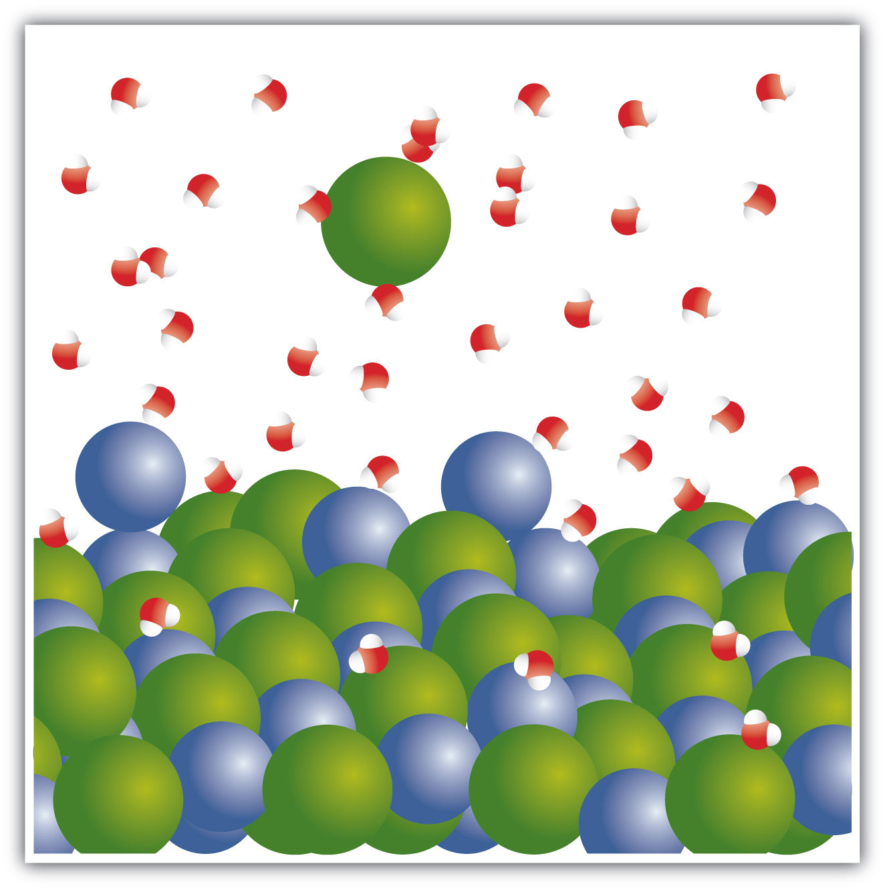

The space shuttle—and any other rocket-based system—uses chemical reactions to propel itself into space and maneuver itself when it gets into orbit. The rockets that lift the orbiter are of two different types. The three main engines are powered by reacting liquid hydrogen with liquid oxygen to generate water. Then there are the two solid rocket boosters, which use a solid fuel mixture that contains mainly ammonium perchlorate and powdered aluminum. The chemical reaction between these substances produces aluminum oxide, water, nitrogen gas, and hydrogen chloride. Although the solid rocket boosters each have a significantly lower mass than the liquid oxygen and liquid hydrogen tanks, they provide over 80% of the lift needed to put the shuttle into orbit—all because of chemical reactions.
Chemistry is largely about chemical changes. Indeed, if there were no chemical changes, chemistry as such would not exist! Chemical changes are a fundamental part of chemistry. Because chemical changes are so central, it may be no surprise that chemistry has developed some special ways of presenting them.
A chemical reaction expresses a chemical change. For example, one chemical property of hydrogen is that it will react with oxygen to make water. We can write that as follows:
hydrogen reacts with oxygen to make waterWe can represent this chemical change more succinctly as
hydrogen + oxygen → waterwhere the + sign means that the two substances interact chemically with each other and the → symbol implies that a chemical reaction takes place. But substances can also be represented by chemical formulas. Remembering that hydrogen and oxygen both exist as diatomic molecules, we can rewrite our chemical change as
H2 + O2 → H2OThis is an example of a chemical equationA concise way of representing a chemical reaction., which is a concise way of representing a chemical reaction. The initial substances are called reactantsAn initial substance in a chemical equation., and the final substances are called productsA final substance in a chemical equation..
Unfortunately, it is also an incomplete chemical equation. The law of conservation of matter says that matter cannot be created or destroyed. In chemical equations, the number of atoms of each element in the reactants must be the same as the number of atoms of each element in the products. If we count the number of hydrogen atoms in the reactants and products, we find two hydrogen atoms. But if we count the number of oxygen atoms in the reactants and products, we find that there are two oxygen atoms in the reactants but only one oxygen atom in the products.
What can we do? Can we change the subscripts in the formula for water so that it has two oxygen atoms in it? No; you cannot change the formulas of individual substances because the chemical formula for a given substance is characteristic of that substance. What you can do, however, is to change the number of molecules that react or are produced. We do this one element at a time, going from one side of the reaction to the other, changing the number of molecules of a substance until all elements have the same number of atoms on each side.
To accommodate the two oxygen atoms as reactants, let us assume that we have two water molecules as products:
H2 + O2 → 2H2OThe 2 in front of the formula for water is called a coefficientA number in a chemical equation indicating more than one molecule of the substance.. Now there is the same number of oxygen atoms in the reactants as there are in the product. But in satisfying the need for the same number of oxygen atoms on both sides of the reaction, we have also changed the number of hydrogen atoms on the product side, so the number of hydrogen atoms is no longer equal. No problem—simply go back to the reactant side of the equation and add a coefficient in front of the H2. The coefficient that works is 2:
2H2 + O2 → 2H2OThere are now four hydrogen atoms in the reactants and also four atoms of hydrogen in the product. There are two oxygen atoms in the reactants and two atoms of oxygen in the product. The law of conservation of matter has been satisfied. When the reactants and products of a chemical equation have the same number of atoms of all elements present, we say that an equation is balancedA condition when the reactants and products of a chemical equation have the same number of atoms of all elements present.. All proper chemical equations are balanced. If a substance does not have a coefficient written in front of it, it is assumed to be 1. Also, the convention is to use all whole numbers when balancing chemical equations. This sometimes makes us do a bit more “back and forth” work when balancing a chemical equation.
Write and balance the chemical equation for each given chemical reaction.
Solution
Let us start by simply writing a chemical equation in terms of the formulas of the substances, remembering that both elemental hydrogen and chlorine are diatomic:
H2 + Cl2 → HClThere are two hydrogen atoms and two chlorine atoms in the reactants and one of each atom in the product. We can fix this by including the coefficient 2 on the product side:
H2 + Cl2 → 2HClNow there are two hydrogen atoms and two chlorine atoms on both sides of the chemical equation, so it is balanced.
Start by writing the chemical equation in terms of the substances involved:
C2H6 + O2 → CO2 + H2OWe have two carbon atoms on the left, so we need two carbon dioxide molecules on the product side, so that each side has two carbon atoms; that element is balanced. We have six hydrogen atoms in the reactants, so we need six hydrogen atoms in the products. We can get this by having three water molecules:
C2H6 + O2 → 2CO2 + 3H2ONow we have seven oxygen atoms in the products (four from the CO2 and three from the H2O). That means we need seven oxygen atoms in the reactants. However, because oxygen is a diatomic molecule, we can only get an even number of oxygen atoms at a time. We can achieve this by multiplying the other coefficients by 2:
2C2H6 + O2 → 4CO2 + 6H2OBy multiplying everything else by 2, we don’t unbalance the other elements, and we now get an even number of oxygen atoms in the product—14. We can get 14 oxygen atoms on the reactant side by having 7 oxygen molecules:
2C2H6 + 7O2 → 4CO2 + 6H2OAs a check, recount everything to determine that each side has the same number of atoms of each element. This chemical equation is now balanced.
Test Yourself
Write and balance the chemical equation that represents nitrogen and hydrogen reacting to produce ammonia, NH3.
Answer
N2 + 3H2 → 2NH3
Many chemical equations also include phase labels for the substances: (s) for solid, (ℓ) for liquid, (g) for gas, and (aq) for aqueous (i.e., dissolved in water). Special conditions, such as temperature, may also be listed above the arrow. For example,
From the statement “nitrogen and hydrogen react to produce ammonia,” identify the reactants and the products.
From the statement “sodium metal reacts with water to produce sodium hydroxide and hydrogen,” identify the reactants and the products.
From the statement “magnesium hydroxide reacts with nitric acid to produce magnesium nitrate and water,” identify the reactants and the products.
From the statement “propane reacts with oxygen to produce carbon dioxide and water,” identify the reactants and the products.
Write and balance the chemical equation described by Exercise 1.
Write and balance the chemical equation described by Exercise 2.
Write and balance the chemical equation described by Exercise 3.
Write and balance the chemical equation described by Exercise 4. The formula for propane is C3H8.
Balance: ___NaClO3 → ___NaCl + ___O2
Balance: ___N2 + ___H2 → ___N2H4
Balance: ___Al + ___O2 → ___Al2O3
Balance: ___C2H4 + ___O2 → ___CO2 + ___H2O
How would you write the balanced chemical equation in Exercise 10 if all substances were gases?
How would you write the balanced chemical equation in Exercise 12 if all the substances except water were gases and water itself were a liquid?
reactants: nitrogen and hydrogen; product: ammonia
reactants: magnesium hydroxide and nitric acid; products: magnesium nitrate and water
N2 + 3H2 → 2NH3
Mg(OH)2 + 2HNO3 → Mg(NO3)2 + 2H2O
2NaClO3 → 2NaCl + 3O2
4Al + 3O2 → 2Al2O3
N2(g) + 3H2(g) → 2NH3(g)
Up to now, we have presented chemical reactions as a topic, but we have not discussed how the products of a chemical reaction can be predicted. Here we will begin our study of certain types of chemical reactions that allow us to predict what the products of the reaction will be.
A single-replacement reactionA chemical reaction in which one element is substituted for another element in a compound. is a chemical reaction in which one element is substituted for another element in a compound, generating a new element and a new compound as products. For example,
2HCl(aq) + Zn(s) → ZnCl2(aq) + H2(g)is an example of a single-replacement reaction. The hydrogen atoms in HCl are replaced by Zn atoms, and in the process a new element—hydrogen—is formed. Another example of a single-replacement reaction is
2NaCl(aq) + F2(g) → 2NaF(s) + Cl2(g)Here the negatively charged ion changes from chloride to fluoride. A typical characteristic of a single-replacement reaction is that there is one element as a reactant and another element as a product.
Not all proposed single-replacement reactions will occur between two given reactants. This is most easily demonstrated with fluorine, chlorine, bromine, and iodine. Collectively, these elements are called the halogens and are in the next-to-last column on the periodic table (see Figure 4.1 "Halogens on the Periodic Table"). The elements on top of the column will replace the elements below them on the periodic table but not the other way around. Thus, the reaction represented by
CaI2(s) + Cl2(g) → CaCl2(s) + I2(s)will occur, but the reaction
CaF2(s) + Br2(ℓ) → CaBr2(s) + F2(g)will not because bromine is below fluorine on the periodic table. This is just one of many ways the periodic table helps us understand chemistry.
Figure 4.1 Halogens on the Periodic Table

The halogens are the elements in the next-to-last column on the periodic table.
Will a single-replacement reaction occur? If so, identify the products.
Solution
Test Yourself
Will a single-replacement reaction occur? If so, identify the products.
FeI2 + Cl2 → ?
Answer
Yes; FeCl2 and I2
Chemical reactivity trends are easy to predict when replacing anions in simple ionic compounds—simply use their relative positions on the periodic table. However, when replacing the cations, the trends are not as straightforward. This is partly because there are so many elements that can form cations; an element in one column on the periodic table may replace another element nearby, or it may not. A list called the activity seriesA list of elements that will replace elements below them in single-replacement reactions. does the same thing the periodic table does for halogens: it lists the elements that will replace elements below them in single-replacement reactions. A simple activity series is shown below.
Using the activity series is similar to using the positions of the halogens on the periodic table. An element on top will replace an element below it in compounds undergoing a single-replacement reaction. Elements will not replace elements above them in compounds.
Use the activity series to predict the products, if any, of each equation.
Solution
Test Yourself
Use the activity series to predict the products, if any, of this equation.
AlPO4 + Mg → ?
Answer
Mg3(PO4)2 and Al
A double-replacement reactionA chemical reaction in which parts of two ionic compounds are exchanged. occurs when parts of two ionic compounds are exchanged, making two new compounds. A characteristic of a double-replacement equation is that there are two compounds as reactants and two different compounds as products. An example is
CuCl2(aq) + 2AgNO3(aq) → Cu(NO3)2(aq) + 2AgCl(s)There are two equivalent ways of considering a double-replacement equation: either the cations are swapped, or the anions are swapped. (You cannot swap both; you would end up with the same substances you started with.) Either perspective should allow you to predict the proper products, as long as you pair a cation with an anion and not a cation with a cation or an anion with an anion.
Predict the products of this double-replacement equation: BaCl2 + Na2SO4 → ?
Solution
Thinking about the reaction as either switching the cations or switching the anions, we would expect the products to be BaSO4 and NaCl.
Test Yourself
Predict the products of this double-replacement equation: KBr + AgNO3 → ?
Answer
KNO3 and AgBr
Predicting whether a double-replacement reaction occurs is somewhat more difficult than predicting a single-replacement reaction. However, there is one type of double-replacement reaction that we can predict: the precipitation reaction. A precipitation reactionA chemical reaction in which two ionic compounds are dissolved in water and form a new ionic compound that does not dissolve. occurs when two ionic compounds are dissolved in water and form a new ionic compound that does not dissolve; this new compound falls out of solution as a solid precipitateA solid that falls out of solution in a precipitation reaction.. The formation of a solid precipitate is the driving force that makes the reaction proceed.
To judge whether double-replacement reactions will occur, we need to know what kinds of ionic compounds form precipitates. For this, we use solubility rulesGeneral statements that predict which ionic compounds dissolve and which do not., which are general statements that predict which ionic compounds dissolve (are soluble) and which do not (are not soluble or insoluble). Table 4.1 "Some Useful Solubility Rules" lists some general solubility rules. We need to consider each ionic compound (both the reactants and the possible products) in light of the solubility rules in Table 4.1 "Some Useful Solubility Rules". If a compound is soluble, we use the (aq) label with it, indicating it dissolves. If a compound is not soluble, we use the (s) label with it and assume that it will precipitate out of solution. If everything is soluble, then no reaction will be expected.
Table 4.1 Some Useful Solubility Rules
| These compounds generally dissolve in water (are soluble): | Exceptions: |
| All compounds of Li+, Na+, K+, Rb+, Cs+, and NH4+ | None |
| All compounds of NO3− and C2H3O2− | None |
| Compounds of Cl−, Br−, I− | Ag+, Hg22+, Pb2+ |
| Compounds of SO42 | Hg22+, Pb2+, Sr2+, Ba2+ |
| These compounds generally do not dissolve in water (are insoluble): | Exceptions: |
| Compounds of CO32− and PO43− | Compounds of Li+, Na+, K+, Rb+, Cs+, and NH4+ |
| Compounds of OH− | Compounds of Li+, Na+, K+, Rb+, Cs+, NH4+, Sr2+, and Ba2+ |
For example, consider the possible double-replacement reaction between Na2SO4 and SrCl2. The solubility rules say that all ionic sodium compounds are soluble and all ionic chloride compounds are soluble except for Ag+, Hg22+, and Pb2+, which are not being considered here. Therefore, Na2SO4 and SrCl2 are both soluble. The possible double-replacement reaction products are NaCl and SrSO4. Are these soluble? NaCl is (by the same rule we just quoted), but what about SrSO4? Compounds of the sulfate ion are generally soluble, but Sr2+ is an exception: we expect it to be insoluble—a precipitate. Therefore, we expect a reaction to occur, and the balanced chemical equation would be
Na2SO4(aq) + SrCl2(aq) → 2NaCl(aq) + SrSO4(s)You would expect to see a visual change corresponding to SrSO4 precipitating out of solution (Figure 4.2 "Double-Replacement Reactions").
Figure 4.2 Double-Replacement Reactions

Some double-replacement reactions are obvious because you can see a solid precipitate coming out of solution.
Source: Photo courtesy of Choij, http://commons.wikimedia.org/wiki/File:Copper_solution.jpg.
Will a double-replacement reaction occur? If so, identify the products.
Solution
According to the solubility rules, both NaOH and FeCl2 are expected to be soluble. If we assume that a double-replacement reaction may occur, we need to consider the possible products, which would be NaCl and Fe(OH)2. NaCl is soluble, but, according to the solubility rules, Fe(OH)2 is not. Therefore, a reaction would occur, and Fe(OH)2(s) would precipitate out of solution. The balanced chemical equation is
2NaOH(aq) + FeCl2(aq) → 2NaCl(aq) + Fe(OH)2(s)Test Yourself
Will a double-replacement equation occur? If so, identify the products.
Sr(NO3)2 + KCl → ?
Answer
No reaction; all possible products are soluble.
What are the general characteristics that help you recognize single-replacement reactions?
What are the general characteristics that help you recognize double-replacement reactions?
Assuming that each single-replacement reaction occurs, predict the products and write each balanced chemical equation.
Assuming that each single-replacement reaction occurs, predict the products and write each balanced chemical equation.
Assuming that each single-replacement reaction occurs, predict the products and write each balanced chemical equation.
Assuming that each single-replacement reaction occurs, predict the products and write each balanced chemical equation.
Use the periodic table or the activity series to predict if each single-replacement reaction will occur and, if so, write a balanced chemical equation.
Use the periodic table or the activity series to predict if each single-replacement reaction will occur and, if so, write a balanced chemical equation.
Use the periodic table or the activity series to predict if each single-replacement reaction will occur and, if so, write a balanced chemical equation.
Use the periodic table or the activity series to predict if each single-replacement reaction will occur and, if so, write a balanced chemical equation.
Assuming that each double-replacement reaction occurs, predict the products and write each balanced chemical equation.
Assuming that each double-replacement reaction occurs, predict the products and write each balanced chemical equation.
Assuming that each double-replacement reaction occurs, predict the products and write each balanced chemical equation.
Assuming that each double-replacement reaction occurs, predict the products and write each balanced chemical equation.
Use the solubility rules to predict if each double-replacement reaction will occur and, if so, write a balanced chemical equation.
Use the solubility rules to predict if each double-replacement reaction will occur and, if so, write a balanced chemical equation.
Use the solubility rules to predict if each double-replacement reaction will occur and, if so, write a balanced chemical equation.
Use the solubility rules to predict if each double-replacement reaction will occur and, if so, write a balanced chemical equation.
One element replaces another element in a compound.
For single-replacement and double-replacement reactions, many of the reactions included ionic compounds: compounds between metals and nonmetals or compounds that contained recognizable polyatomic ions. Now we take a closer look at reactions that include ionic compounds.
One important aspect about ionic compounds that differs from molecular compounds has to do with dissolving in a liquid, such as water. When molecular compounds, such as sugar, dissolve in water, the individual molecules drift apart from each other. When ionic compounds dissolve, the ions physically separate from each other. We can use a chemical equation to represent this process—for example, with NaCl:
When NaCl dissolves in water, the ions separate and go their own way in solution; the ions are now written with their respective charges, and the (aq) phase label emphasizes that they are dissolved (Figure 4.3 "Ionic Solutions"). This process is called dissociationThe process of an ionic compound separating into ions when it dissolves.; we say that the ions dissociate.
Figure 4.3 Ionic Solutions
When an ionic compound dissociates in water, water molecules surround each ion and separate it from the rest of the solid. Each ion goes its own way in solution.
All ionic compounds that dissolve behave this way. (This behavior was first suggested by the Swedish chemist Svante August Arrhenius [1859–1927] as part of his PhD dissertation in 1884. Interestingly, his PhD examination team had a hard time believing that ionic compounds would behave like this, so they gave Arrhenius a barely passing grade. Later, this work was cited when Arrhenius was awarded the Nobel Prize in Chemistry.) Keep in mind that when the ions separate, all the ions separate. Thus, when CaCl2 dissolves, the one Ca2+ ion and the two Cl− ions separate from each other:
That is, the two chloride ions go off on their own. They do not remain as Cl2 (that would be elemental chlorine; these are chloride ions); they do not stick together to make Cl2− or Cl22−. They become dissociated ions in their own right. Polyatomic ions also retain their overall identity when they are dissolved.
Write the chemical equation that represents the dissociation of each ionic compound.
Solution
Not only do the two sodium ions go their own way, but the sulfate ion stays together as the sulfate ion. The dissolving equation is
Na2SO4(s) → 2Na+(aq) + SO42−(aq)Test Yourself
Write the chemical equation that represents the dissociation of (NH4)2S.
Answer
(NH4)2S(s) → 2NH4+(aq) + S2−(aq)
When chemicals in solution react, the proper way of writing the chemical formulas of the dissolved ionic compounds is in terms of the dissociated ions, not the complete ionic formula. A complete ionic equationA chemical equation in which the dissolved ionic compounds are written as separated ions. is a chemical equation in which the dissolved ionic compounds are written as separated ions. Solubility rules are very useful in determining which ionic compounds are dissolved and which are not. For example, when NaCl(aq) reacts with AgNO3(aq) in a double-replacement reaction to precipitate AgCl(s) and form NaNO3(aq), the complete ionic equation includes NaCl, AgNO3, and NaNO3 written as separated ions:
Na+(aq) + Cl−(aq) + Ag+(aq) + NO3−(aq) → AgCl(s) + Na+(aq) + NO3−(aq)This is more representative of what is occurring in the solution.
Write the complete ionic equation for each chemical reaction.
Solution
For any ionic compound that is aqueous, we will write the compound as separated ions.
The complete ionic equation is
K+(aq) + Br−(aq) + Ag+(aq) + C2H3O2−(aq) → K+(aq) + C2H3O2−(aq) + AgBr(s)The complete ionic equation is
Mg2+(aq) + SO42−(aq) + Ba2+(aq) + 2NO3−(aq) → Mg2+(aq) + 2NO3−(aq) + BaSO4(s)Test Yourself
Write the complete ionic equation for
CaCl2(aq) + Pb(NO3)2(aq) → Ca(NO3)2(aq) + PbCl2(s)Answer
Ca2+(aq) + 2Cl−(aq) + Pb2+(aq) + 2NO3−(aq) → Ca2+(aq) + 2NO3−(aq) + PbCl2(s)
You may notice that in a complete ionic equation, some ions do not change their chemical form; they stay exactly the same on the reactant and product sides of the equation. For example, in
Na+(aq) + Cl−(aq) + Ag+(aq) + NO3−(aq) → AgCl(s) + Na+(aq) + NO3−(aq)the Ag+(aq) and Cl−(aq) ions become AgCl(s), but the Na+(aq) ions and the NO3−(aq) ions stay as Na+(aq) ions and NO3−(aq) ions. These two ions are examples of spectator ionsAn ion that does nothing in the overall course of a chemical reaction., ions that do nothing in the overall course of a chemical reaction. They are present, but they do not participate in the overall chemistry. It is common to cancel spectator ions (something also done with algebraic quantities) on the opposite sides of a chemical equation:
What remains when the spectator ions are removed is called the net ionic equationA chemical equation with the spectator ions removed., which represents the actual chemical change occurring between the ionic compounds:
Cl−(aq) + Ag+(aq) → AgCl(s)It is important to reiterate that the spectator ions are still present in solution, but they don’t experience any net chemical change, so they are not written in a net ionic equation.
Write the net ionic equation for each chemical reaction.
Solution
In the first equation, the K+(aq) and C2H3O2−(aq) ions are spectator ions, so they are canceled:
The net ionic equation is
Br−(aq) + Ag+(aq) → AgBr(s)In the second equation, the Mg2+(aq) and NO3−(aq) ions are spectator ions, so they are canceled:
The net ionic equation is
SO42−(aq) + Ba2+(aq) → BaSO4(s)Test Yourself
Write the net ionic equation for
CaCl2(aq) + Pb(NO3)2(aq) → Ca(NO3)2(aq) + PbCl2(s)Answer
Pb2+(aq) + 2Cl−(aq) → PbCl2(s)
The concept of solubility versus insolubility in ionic compounds is a matter of degree. Some ionic compounds are very soluble, some are only moderately soluble, and some are soluble so little that they are considered insoluble. For most ionic compounds, there is also a limit to the amount of compound can be dissolved in a sample of water. For example, you can dissolve a maximum of 36.0 g of NaCl in 100 g of water at room temperature, but you can dissolve only 0.00019 g of AgCl in 100 g of water. We consider NaCl soluble but AgCl insoluble.
One place where solubility is important is in the tank-type water heater found in many homes in the United States. Domestic water frequently contains small amounts of dissolved ionic compounds, including calcium carbonate (CaCO3). However, CaCO3 has the relatively unusual property of being less soluble in hot water than in cold water. So as the water heater operates by heating water, CaCO3 can precipitate if there is enough of it in the water. This precipitate, called limescale, can also contain magnesium compounds, hydrogen carbonate compounds, and phosphate compounds. The problem is that too much limescale can impede the function of a water heater, requiring more energy to heat water to a specific temperature or even blocking water pipes into or out of the water heater, causing dysfunction.
Another place where solubility versus insolubility is an issue is the Grand Canyon. We usually think of rock as insoluble. But it is actually ever so slightly soluble. This means that over a period of about two billion years, the Colorado River carved rock from the surface by slowly dissolving it, eventually generating a spectacular series of gorges and canyons. And all because of solubility!
Write a chemical equation that represents NaBr(s) dissociating in water.
Write a chemical equation that represents SrCl2(s) dissociating in water.
Write a chemical equation that represents (NH4)3PO4(s) dissociating in water.
Write a chemical equation that represents Fe(C2H3O2)3(s) dissociating in water.
Write the complete ionic equation for the reaction of FeCl2(aq) and AgNO3(aq). You may have to consult the solubility rules.
Write the complete ionic equation for the reaction of BaCl2(aq) and Na2SO4(aq). You may have to consult the solubility rules.
Write the complete ionic equation for the reaction of KCl(aq) and NaC2H3O2(aq). You may have to consult the solubility rules.
Write the complete ionic equation for the reaction of Fe2(SO4)3(aq) and Sr(NO3)2(aq). You may have to consult the solubility rules.
Write the net ionic equation for the reaction of FeCl2(aq) and AgNO3(aq). You may have to consult the solubility rules.
Write the net ionic equation for the reaction of BaCl2(aq) and Na2SO4(aq). You may have to consult the solubility rules.
Write the net ionic equation for the reaction of KCl(aq) and NaC2H3O2(aq). You may have to consult the solubility rules.
Write the net ionic equation for the reaction of Fe2(SO4)3(aq) and Sr(NO3)2(aq). You may have to consult the solubility rules.
Identify the spectator ions in Exercises 9 and 10.
Identify the spectator ions in Exercises 11 and 12.
NaBr(s) Na+(aq) + Br−(aq)
(NH4)3PO4(s) 3NH4+(aq) + PO43−(aq)
Fe2+(aq) + 2Cl−(aq) + 2Ag+(aq) + 2NO3−(aq) → Fe2+(aq) + 2NO3−(aq) + 2AgCl(s)
K+(aq) + Cl−(aq) + Na+(aq) + C2H3O2−(aq) → Na+(aq) + Cl−(aq) + K+(aq) + C2H3O2−(aq)
2Cl−(aq) + 2Ag+(aq) → 2AgCl(s)
There is no overall reaction.
In Exercise 9, Fe2+(aq) and NO3−(aq) are spectator ions; in Exercise 10, Na+(aq) and Cl−(aq) are spectator ions.
Three classifications of chemical reactions will be reviewed in this section. Predicting the products in some of them may be difficult, but the reactions are still easy to recognize.
A composition reactionA chemical reaction in which a single substance is produced from multiple reactants. (sometimes also called a combination reaction or a synthesis reaction) produces a single substance from multiple reactants. A single substance as a product is the key characteristic of the composition reaction. There may be a coefficient other than one for the substance, but if the reaction has only a single substance as a product, it can be called a composition reaction. In the reaction
2H2(g) + O2(g) → 2H2O(ℓ)water is produced from hydrogen and oxygen. Although there are two molecules of water being produced, there is only one substance—water—as a product. So this is a composition reaction.
A decomposition reactionA chemical reaction in which a single substance becomes more than one substance. starts from a single substance and produces more than one substance; that is, it decomposes. One substance as a reactant and more than one substance as the products is the key characteristic of a decomposition reaction. For example, in the decomposition of sodium hydrogen carbonate (also known as sodium bicarbonate),
2NaHCO3(s) → Na2CO3(s) + CO2(g) + H2O(ℓ)sodium carbonate, carbon dioxide, and water are produced from the single substance sodium hydrogen carbonate.
Composition and decomposition reactions are difficult to predict; however, they should be easy to recognize.
Identify each equation as a composition reaction, a decomposition reaction, or neither.
Solution
Test Yourself
Identify the equation as a composition reaction, a decomposition reaction, or neither.
C3H8 → C3H4 + 2H2Answer
decomposition
A combustion reactionA chemical reaction in which a reactant combines with oxygen to produce oxides of all other elements as products. occurs when a reactant combines with oxygen, many times from the atmosphere, to produce oxides of all other elements as products; any nitrogen in the reactant is converted to elemental nitrogen, N2. Many reactants, called fuels, contain mostly carbon and hydrogen atoms, reacting with oxygen to produce CO2 and H2O. For example, the balanced chemical equation for the combustion of methane, CH4, is as follows:
CH4 + 2O2 → CO2 + 2H2OKerosene can be approximated with the formula C12H26, and its combustion equation is
2C12H26 + 37O2 → 24CO2 + 26H2OSometimes fuels contain oxygen atoms, which must be counted when balancing the chemical equation. One common fuel is ethanol, C2H5OH, whose combustion equation is
C2H5OH + 3O2 → 2CO2 + 3H2OIf nitrogen is present in the original fuel, it is converted to N2, not to a nitrogen-oxygen compound. Thus, for the combustion of the fuel dinitroethylene, whose formula is C2H2N2O4, we have
2C2H2N2O4 + O2 → 4CO2 + 2H2O + 2N2Complete and balance each combustion equation.
Solution
The products of the reaction are CO2 and H2O, so our unbalanced equation is
C3H8 + O2 → CO2 + H2OBalancing (and you may have to go back and forth a few times to balance this), we get
C3H8 + 5O2 → 3CO2 + 4H2OThe nitrogen atoms in ammonia will react to make N2, while the hydrogen atoms will react with O2 to make H2O:
NH3 + O2 → N2 + H2OTo balance this equation without fractions (which is the convention), we get
4NH3 + 3O2 → 2N2 + 6H2OTest Yourself
Complete and balance the combustion equation for cyclopropanol, C3H6O.
Answer
C3H6O + 4O2 → 3CO2 + 3H2O
Which is a composition reaction and which is not?
Which is a composition reaction and which is not?
Which is a composition reaction and which is not?
Which is a composition reaction and which is not?
Which is a decomposition reaction and which is not?
Which is a decomposition reaction and which is not?
Which is a decomposition reaction and which is not?
Which is a decomposition reaction and which is not?
Which is a combustion reaction and which is not?
Which is a combustion reaction and which is not?
Which is a combustion reaction and which is not?
Which is a combustion reaction and which is not?
Is it possible for a composition reaction to also be a combustion reaction? Give an example to support your case.
Is it possible for a decomposition reaction to also be a combustion reaction? Give an example to support your case.
Complete and balance each combustion equation.
Complete and balance each combustion equation.
Yes; 2H2 + O2 → 2H2O (answers will vary)
In Chapter 3 "Atoms, Molecules, and Ions", Section 3.5 "Acids", we defined an acid as an ionic compound that contains H+ as the cation. This is slightly incorrect, but until additional concepts were developed, a better definition needed to wait. Now we can redefine an acid: an acidA compound that increases the amount of ions in an aqueous solution. is any compound that increases the amount of hydrogen ion (H+) in an aqueous solution. The chemical opposite of an acid is a base. The equivalent definition of a base is that a baseA compound that increases the amount of ions in an aqueous solution. is a compound that increases the amount of hydroxide ion (OH−) in an aqueous solution. These original definitions were proposed by Arrhenius (the same person who proposed ion dissociation) in 1884, so they are referred to as the Arrhenius definition of an acid and a base, respectively.
You may recognize that, based on the description of a hydrogen atom, an H+ ion is a hydrogen atom that has lost its lone electron; that is, H+ is simply a proton. Do we really have bare protons moving about in aqueous solution? No. What is more likely is that the H+ ion has attached itself to one (or more) water molecule(s). To represent this chemically, we define the hydronium ion, a water molecule with an extra hydrogen ion attached to it. as H3O+, which represents an additional proton attached to a water molecule. We use the hydronium ion as the more logical way a hydrogen ion appears in an aqueous solution, although in many chemical reactions H+ and H3O+ are treated equivalently.
The reaction of an acid and a base is called a neutralization reactionThe reaction of an acid with a base to produce water and a salt.. Although acids and bases have their own unique chemistries, the acid and base cancel each other’s chemistry to produce a rather innocuous substance—water. In fact, the general reaction between an acid and a base is
acid + base → water + saltwhere the term saltAny ionic compound that is formed from a reaction between an acid and a base. is generally used to define any ionic compound (soluble or insoluble) that is formed from a reaction between an acid and a base. (In chemistry, the word salt refers to more than just table salt.) For example, the balanced chemical equation for the reaction between HCl(aq) and KOH(aq) is
HCl(aq) + KOH(aq) → H2O(ℓ) + KCl(aq)where the salt is KCl. By counting the number of atoms of each element, we find that only one water molecule is formed as a product. However, in the reaction between HCl(aq) and Mg(OH)2(aq), additional molecules of HCl and H2O are required to balance the chemical equation:
2HCl(aq) + Mg(OH)2(aq) → 2H2O(ℓ) + MgCl2(aq)Here, the salt is MgCl2. (This is one of several reactions that take place when a type of antacid—a base—is used to treat stomach acid.)
Write the neutralization reactions between each acid and base.
Solution
First, we will write the chemical equation with the formulas of the reactants and the expected products; then we will balance the equation.
The expected products are water and barium nitrate, so the initial chemical reaction is
HNO3(aq) + Ba(OH)2(aq) → H2O(ℓ) + Ba(NO3)2(aq)To balance the equation, we need to realize that there will be two H2O molecules, so two HNO3 molecules are required:
2HNO3(aq) + Ba(OH)2(aq) → 2H2O(ℓ) + Ba(NO3)2(aq)This chemical equation is now balanced.
The expected products are water and calcium phosphate, so the initial chemical equation is
H3PO4(aq) + Ca(OH)2(aq) → H2O(ℓ) + Ca3(PO4)2(s)According to the solubility rules, Ca3(PO4)2 is insoluble, so it has an (s) phase label. To balance this equation, we need two phosphate ions and three calcium ions; we end up with six water molecules to balance the equation:
2H3PO4(aq) + 3Ca(OH)2(aq) → 6H2O(ℓ) + Ca3(PO4)2(s)This chemical equation is now balanced.
Test Yourself
Write the neutralization reaction between H2SO4(aq) and Sr(OH)2(aq).
Answer
H2SO4(aq) + Sr(OH)2(aq) → 2H2O(ℓ) + SrSO4(aq)
Neutralization reactions are one type of chemical reaction that proceeds even if one reactant is not in the aqueous phase. For example, the chemical reaction between HCl(aq) and Fe(OH)3(s) still proceeds according to the equation
3HCl(aq) + Fe(OH)3(s) → 3H2O(ℓ) + FeCl3(aq)even though Fe(OH)3 is not soluble. When one realizes that Fe(OH)3(s) is a component of rust, this explains why some cleaning solutions for rust stains contain acids—the neutralization reaction produces products that are soluble and wash away. (Washing with acids like HCl is one way to remove rust and rust stains, but HCl must be used with caution!)
Complete and net ionic reactions for neutralization reactions will depend on whether the reactants and products are soluble, even if the acid and base react. For example, in the reaction of HCl(aq) and NaOH(aq),
HCl(aq) + NaOH(aq) → H2O(ℓ) + NaCl(aq)the complete ionic reaction is
H+(aq) + Cl−(aq) + Na+(aq) + OH−(aq) → H2O(ℓ) + Na+(aq) + Cl−(aq)The Na+(aq) and Cl−(aq) ions are spectator ions, so we can remove them to have
H+(aq) + OH−(aq) → H2O(ℓ)as the net ionic equation. If we wanted to write this in terms of the hydronium ion, H3O+(aq), we would write it as
H3O+(aq) + OH−(aq) → 2H2O(ℓ)With the exception of the introduction of an extra water molecule, these two net ionic equations are equivalent.
However, for the reaction between HCl(aq) and Cr(OH)2(s), because chromium(II) hydroxide is insoluble, we cannot separate it into ions for the complete ionic equation:
2H+(aq) + 2Cl−(aq) + Cr(OH)2(s) → 2H2O(ℓ) + Cr2+(aq) + 2Cl−(aq)The chloride ions are the only spectator ions here, so the net ionic equation is
2H+(aq) + Cr(OH)2(s) → 2H2O(ℓ) + Cr2+(aq)Oxalic acid, H2C2O4(s), and Ca(OH)2(s) react very slowly. What is the net ionic equation between these two substances if the salt formed is insoluble? (The anion in oxalic acid is the oxalate ion, C2O42−.)
Solution
The products of the neutralization reaction will be water and calcium oxalate:
H2C2O4(s) + Ca(OH)2(s) → 2H2O(ℓ) + CaC2O4(s)Because nothing is dissolved, there are no substances to separate into ions, so the net ionic equation is the equation of the three solids and one liquid.
Test Yourself
What is the net ionic equation between HNO3(aq) and Ti(OH)4(s)?
Answer
4H+(aq) + Ti(OH)4(s) → 4H2O(ℓ) + Ti4+(aq)
What is the Arrhenius definition of an acid?
What is the Arrhenius definition of a base?
Predict the products of each acid-base combination listed. Assume that a neutralization reaction occurs.
Predict the products of each acid-base combination listed. Assume that a neutralization reaction occurs.
Write a balanced chemical equation for each neutralization reaction in Exercise 3.
Write a balanced chemical equation for each neutralization reaction in Exercise 4.
Write a balanced chemical equation for the neutralization reaction between each given acid and base. Include the proper phase labels.
Write a balanced chemical equation for the neutralization reaction between each given acid and base. Include the proper phase labels.
Write the net ionic equation for each neutralization reaction in Exercise 7.
Write the net ionic equation for each neutralization reaction in Exercise 8.
Write the complete and net ionic equations for the neutralization reaction between HClO3(aq) and Zn(OH)2(s). Assume the salt is soluble.
Write the complete and net ionic equations for the neutralization reaction between H2C2O4(s) and Sr(OH)2(aq). Assume the salt is insoluble.
Explain why the net ionic equation for the neutralization reaction between HCl(aq) and KOH(aq) is the same as the net ionic equation for the neutralization reaction between HNO3(aq) and RbOH.
Explain why the net ionic equation for the neutralization reaction between HCl(aq) and KOH(aq) is different from the net ionic equation for the neutralization reaction between HCl(aq) and AgOH.
Write the complete and net ionic equations for the neutralization reaction between HCl(aq) and KOH(aq) using the hydronium ion in place of H+. What difference does it make when using the hydronium ion?
Write the complete and net ionic equations for the neutralization reaction between HClO3(aq) and Zn(OH)2(s) using the hydronium ion in place of H+. Assume the salt is soluble. What difference does it make when using the hydronium ion?
An Arrhenius acid increases the amount of H+ ions in an aqueous solution.
Complete ionic equation:
2H+(aq) + 2ClO3−(aq) + Zn2+(aq) + 2OH−(aq) → Zn2+(aq) + 2ClO3−(aq) + 2H2O(ℓ)Net ionic equation:
2H+(aq) + 2OH−(aq) → 2H2O(ℓ)Because the salts are soluble in both cases, the net ionic reaction is just H+(aq) + OH−(aq) → H2O(ℓ).
Complete ionic equation:
H3O+(aq) + Cl−(aq) + K+(aq) + OH−(aq) → 2H2O(ℓ) + K+(aq) + Cl−(aq)Net ionic equation:
H3O+(aq) + OH−(aq) → 2H2O(ℓ)The difference is simply the presence of an extra water molecule as a product.
Consider this chemical reaction:
2Na(s) + Cl2(g) → 2NaClThe reactants are elements, and it is assumed that they are electrically neutral; they have the same number of electrons as protons. The product, however, is ionic; it is composed of Na+ and Cl− ions. Somehow, the individual sodium atoms as reactants had to lose an electron to make the Na+ ion, while the chlorine atoms as reactants had to each gain an electron to become the Cl− ion. This reaction involves the transfer of electrons between atoms.
In reality, electrons are lost by some atoms and gained by other atoms simultaneously. However, mentally we can separate the two processes. OxidationThe loss of one or more electrons by an atom; an increase in oxidation number. is defined as the loss of one or more electrons by an atom. ReductionThe gain of one or more electrons by an atom; a decrease in oxidation number. is defined as the gain of one or more electrons by an atom. In reality, oxidation and reduction always occur together; it is only mentally that we can separate them. Chemical reactions that involve the transfer of electrons are called oxidation-reduction (or redox) reactionsA chemical reaction that involves the transfer of electrons..
Redox reactions require that we keep track of the electrons assigned to each atom in a chemical reaction. How do we do that? We use an artificial count called the oxidation numberA number assigned to an atom that helps keep track of the number of electrons on the atom. to keep track of electrons in atoms. Oxidation numbers are assigned to atoms based on a series of rules. Oxidation numbers are not necessarily equal to the charge on the atom; we must keep the concepts of charge and oxidation numbers separate.
The rules for assigning oxidation numbers to atoms are as follows:
Let us work through a few examples for practice. In H2, both hydrogen atoms have an oxidation number of 0, by rule 1. In NaCl, sodium has an oxidation number of +1, while chlorine has an oxidation number of −1, by rule 2. In H2O, the hydrogen atoms each have an oxidation number of +1, while the oxygen has an oxidation number of −2, even though hydrogen and oxygen do not exist as ions in this compound as per rule 3. By contrast, by rule 3 in hydrogen peroxide (H2O2), each hydrogen atom has an oxidation number of +1, while each oxygen atom has an oxidation number of −1. We can use rule 4 to determine oxidation numbers for the atoms in SO2. Each oxygen atom has an oxidation number of −2; for the sum of the oxidation numbers to equal the charge on the species (which is zero), the sulfur atom is assigned an oxidation number of +4. Does this mean that the sulfur atom has a 4+ charge on it? No, it only means that the sulfur atom is assigned a +4 oxidation number by our rules of apportioning electrons among the atoms in a compound.
Assign oxidation numbers to the atoms in each substance.
Solution
The compound barium nitrate can be separated into two parts: the Ba2+ ion and the nitrate ion. Considering these separately, the Ba2+ ion has an oxidation number of +2 by rule 2. Now consider the NO3− ion. Oxygen is assigned an oxidation number of −2, and there are three oxygens. According to rule 4, the sum of the oxidation number on all atoms must equal the charge on the species, so we have the simple algebraic equation
x + 3(−2) = −1where x is the oxidation number of the nitrogen atom and −1 represents the charge on the species. Evaluating,
x + (−6) = −1 x = +5Thus, the oxidation number on the N atom in the nitrate ion is +5.
Test Yourself
Assign oxidation numbers to the atoms in H3PO4.
Answer
H = +1, O = −2, P = +5
All redox reactions occur with a simultaneous change in the oxidation numbers of some atoms. At least two elements must change their oxidation numbers. When an oxidation number of an atom is increased in the course of a redox reaction, that atom is being oxidized. When an oxidation number of an atom is decreased in the course of a redox reaction, that atom is being reduced. Oxidation and reduction are thus also defined in terms of increasing or decreasing oxidation numbers, respectively.
Identify what is being oxidized and reduced in this redox equation.
2Na + Cl2 → 2NaClSolution
Consider the reactants. Because both reactants are the elemental forms of their atoms, the Na and Cl atoms as reactants have oxidation numbers of 0. In the ionic product, the sodium ions have an oxidation number of +1, while the chloride ions have an oxidation number of −1:
We note that the sodium is increasing its oxidation number from 0 to +1, so it is being oxidized; chlorine is decreasing its oxidation number from 0 to −1, so it is being reduced:
Because oxidation numbers are changing, this is a redox reaction. Note that the total number of electrons lost by the sodium (two, one lost from each atom) is gained by the chlorine atoms (two, one gained for each atom).
Test Yourself
Identify what is being oxidized and reduced in this redox equation.
C + O2 → CO2Answer
C is being oxidized from 0 to +4; O is being reduced from 0 to −2.
In this introduction to oxidation-reduction reactions, we are using straightforward examples. However, oxidation reactions can become quite complex; the following equation represents a redox reaction:
To demonstrate that this is a redox reaction, the oxidation numbers of the species being oxidized and reduced are listed; can you determine what is being oxidized and what is being reduced? This is also an example of a net ionic reaction; spectator ions that do not change oxidation numbers are not displayed in the equation.
Many foods and beverages contain acids. Acids impart a sour note to the taste of foods, which may add some pleasantness to the food. For example, orange juice contains citric acid, H3C6H5O7. Note how this formula shows hydrogen atoms in two places; the first hydrogen atoms written are the hydrogen atoms that can form H+ ions, while the second hydrogen atoms written are part of the citrate ion, C6H5O73−. Lemons and limes contain much more citric acid—about 60 times as much—which accounts for these citrus fruits being more sour than most oranges. Vinegar is essentially a ~5% solution of acetic acid (HC2H3O2) in water. Apples contain malic acid (H2C4H4O5; the name malic acid comes from the apple’s botanical genus name, malus), while lactic acid (HC3H5O3) is found in wine and sour milk products, such as yogurt and some cottage cheeses.
Table 4.2 "Various Acids Found in Food and Beverages" lists some acids found in foods, either naturally or as an additive. Frequently, the salts of acid anions are used as additives, such as monosodium glutamate (MSG), which is the sodium salt derived from glutamic acid. As you read the list, you should come to the inescapable conclusion that it is impossible to avoid acids in food and beverages.
Table 4.2 Various Acids Found in Food and Beverages
| Acid Name | Acid Formula | Use and Appearance |
|---|---|---|
| acetic acid | HC2H3O2 | flavoring; found in vinegar |
| adipic acid | H2C6H8O4 | flavoring; found in processed foods and some antacids |
| alginic acid | various | thickener; found in drinks, ice cream, and weight loss products |
| ascorbic acid | HC6H7O6 | antioxidant, also known as vitamin C; found in fruits and vegetables |
| benzoic acid | HC6H5CO2 | preservative; found in processed foods |
| citric acid | H3C6H5O7 | flavoring; found in citrus fruits |
| dehydroacetic acid | HC8H7O4 | preservative, especially for strawberries and squash |
| erythrobic acid | HC6H7O6 | antioxidant; found in processed foods |
| fatty acids | various | thickener and emulsifier; found in processed foods |
| fumaric acid | H2C4H2O4 | flavoring; acid reactant in some baking powders |
| glutamic acid | H2C5H7NO4 | flavoring; found in processed foods and in tomatoes, some cheeses, and soy products |
| lactic acid | HC3H5O3 | flavoring; found in wine, yogurt, cottage cheese, and other sour milk products |
| malic acid | H2C4H4O5 | flavoring; found in apples and unripe fruit |
| phosphoric acid | H3PO4 | flavoring; found in some colas |
| propionic acid | HC3H5O2 | preservative; found in baked goods |
| sorbic acid | HC6H7O2 | preservative; found in processed foods |
| stearic acid | HC18H35O2 | anticaking agent; found in hard candies |
| succinic acid | H2C4H4O4 | flavoring; found in wine and beer |
| tartaric acid | H2C4H4O6 | flavoring; found in grapes, bananas, and tamarinds |
This cola can clearly shows that an acid (phosphoric acid) is an ingredient.
Is the reaction
2K(s) + Br2(ℓ) → 2KBr(s)an oxidation-reduction reaction? Explain your answer.
Is the reaction
NaCl(aq) + AgNO3(aq) → NaNO3(aq) + AgCl(s)an oxidation-reduction reaction? Explain your answer.
In the reaction
2Ca(s) + O2(g) → 2CaOindicate what has lost electrons and what has gained electrons.
In the reaction
16Fe(s) + 3S8(s) → 8Fe2S3(s)indicate what has lost electrons and what has gained electrons.
In the reaction
2Li(s) + O2(g) → Li2O2(s)indicate what has been oxidized and what has been reduced.
In the reaction
2Ni(s) + 3I2(s) → 2NiI3(s)indicate what has been oxidized and what has been reduced.
What are two different definitions of oxidation?
What are two different definitions of reduction?
Assign oxidation numbers to each atom in each substance.
Assign oxidation numbers to each atom in each substance.
Assign oxidation numbers to each atom in each substance.
Assign oxidation numbers to each atom in each substance.
Assign oxidation numbers to each atom in each substance.
Assign oxidation numbers to each atom in each substance.
Identify what is being oxidized and reduced in this redox equation by assigning oxidation numbers to the atoms.
2NO + Cl2 → 2NOClIdentify what is being oxidized and reduced in this redox equation by assigning oxidation numbers to the atoms.
Fe + SO3 → FeSO3Identify what is being oxidized and reduced in this redox equation by assigning oxidation numbers to the atoms.
2KrF2 + 2H2O → 2Kr + 4HF + O2Identify what is being oxidized and reduced in this redox equation by assigning oxidation numbers to the atoms.
SO3 + SCl2 → SOCl2 + SO2Identify what is being oxidized and reduced in this redox equation by assigning oxidation numbers to the atoms.
2K + MgCl2 → 2KCl + MgIdentify what is being oxidized and reduced in this redox equation by assigning oxidation numbers to the atoms.
C7H16 + 11O2 → 7CO2 + 8H2OYes; both K and Br are changing oxidation numbers.
Ca has lost electrons, and O has gained electrons.
Li has been oxidized, and O has been reduced.
loss of electrons; increase in oxidation number
N is being oxidized, and Cl is being reduced.
O is being oxidized, and Kr is being reduced.
K is being oxidized, and Mg is being reduced.
Chemical equations can also be used to represent physical processes. Write a chemical reaction for the boiling of water, including the proper phase labels.
Chemical equations can also be used to represent physical processes. Write a chemical reaction for the freezing of water, including the proper phase labels.
Explain why
4Na(s) + 2Cl2(g) → 4NaCl(s)should not be considered a proper chemical equation.
Explain why
H2(g) + 1/2O2(g) → H2O(ℓ)should not be considered a proper chemical equation.
Does the chemical reaction represented by
3Zn(s) + 2Al(NO3)3(aq) → 3Zn(NO3)2(aq) + 2Al(s)proceed as written? Why or why not?
Does the chemical reaction represented by
2Au(s) + 2HNO3(aq) → 2AuNO3(aq) + H2(g)proceed as written? Gold is a relatively useful metal for certain applications, such as jewelry and electronics. Does your answer suggest why this is so?
Explain what is wrong with this double-replacement reaction.
NaCl(aq) + KBr(aq) → NaK(aq) + ClBr(aq)Predict the products of and balance this double-replacement reaction.
Ag2SO4(aq) + SrCl2(aq) → ?Write the complete and net ionic equations for this double-replacement reaction.
BaCl2(aq) + Ag2SO4(aq) → ?Write the complete and net ionic equations for this double-replacement reaction.
Ag2SO4(aq) + SrCl2(aq) → ?Identify the spectator ions in this reaction. What is the net ionic equation?
NaCl(aq) + KBr(aq) → NaBr(aq) + KCl(aq)Complete this reaction and identify the spectator ions. What is the net ionic equation?
3H2SO4(aq) + 2Al(OH)3(s) → ?Can a reaction be a composition reaction and a redox reaction at the same time? Give an example to support your answer.
Can a reaction be a combustion reaction and a redox reaction at the same time? Give an example to support your answer.
Can a reaction be a decomposition reaction and a redox reaction at the same time? Give an example to support your answer.
Can a reaction be a combustion reaction and a double-replacement reaction at the same time? Give an example to support your answer.
Why is CH4 not normally considered an acid?
Methyl alcohol has the formula CH3OH. Why would methyl alcohol not normally be considered a base?
What are the oxidation numbers of the nitrogen atoms in these substances?
What are the oxidation numbers of the sulfur atoms in these substances?
Disproportion is a type of redox reaction in which the same substance is both oxidized and reduced. Identify the element that is disproportionating and indicate the initial and final oxidation numbers of that element.
2CuCl(aq) → CuCl2(aq) + Cu(s)Disproportion is a type of redox reaction in which the same substance is both oxidized and reduced. Identify the element that is disproportionating and indicate the initial and final oxidation numbers of that element.
3Cl2(g) + 6OH−(aq) → 5Cl−(aq) + ClO3−(aq) + 3H2O(ℓ)H2O(ℓ) → H2O(g)
The coefficients are not in their lowest whole-number ratio.
No; zinc is lower in the activity series than aluminum.
In the products, the cation is pairing with the cation, and the anion is pairing with the anion.
Complete ionic equation: Ba2+(aq) + 2Cl−(aq) + 2Ag+(aq) + SO42−(aq) → BaSO4(s) + 2AgCl(s)
Net ionic equation: The net ionic equation is the same as the complete ionic equation.
Each ion is a spectator ion; there is no overall net ionic equation.
Yes; H2 + Cl2 → 2HCl (answers will vary)
Yes; 2HCl → H2 + Cl2 (answers will vary)
It does not increase the H+ ion concentration; it is not a compound of H+.
Copper is disproportionating. Initially, its oxidation number is +1; in the products, its oxidation numbers are +2 and 0, respectively.